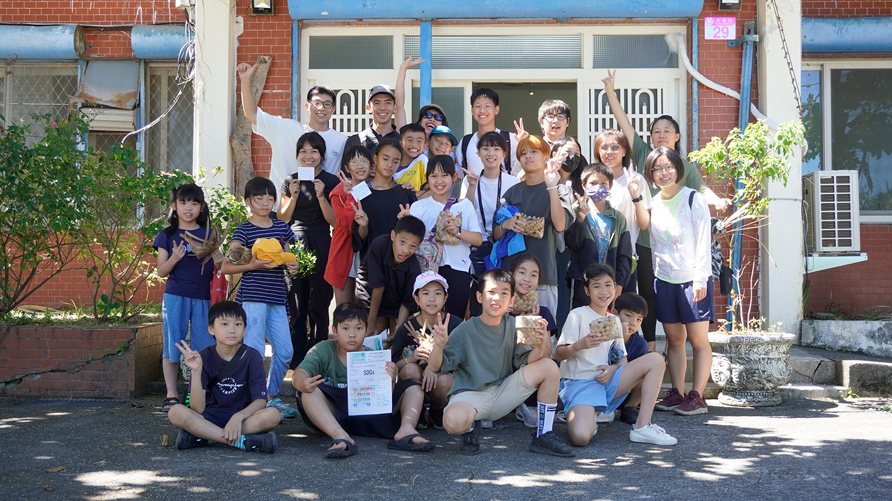
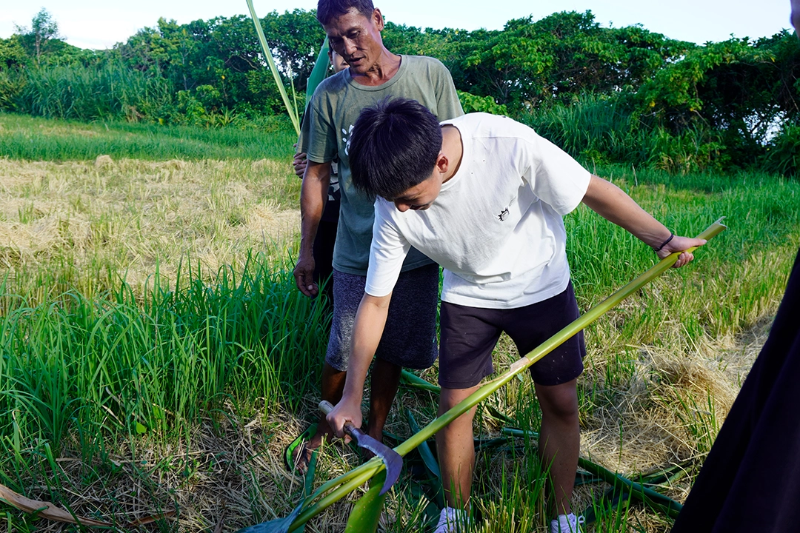
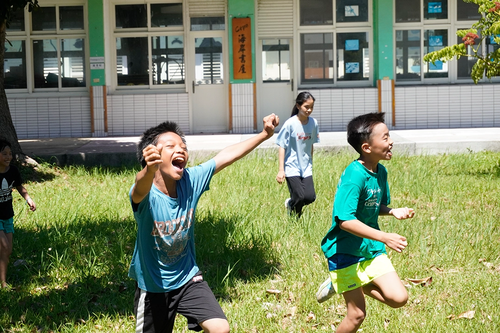

永續發展遇見在地文化！港口部落的青春寫真
23-10-2024



在地文化與永續發展的完美邂逅
芥你知道永續發展可以這麼有趣嗎？志工們運用繪本說故事的方式，讓孩子們輕鬆理解什麼是聯合國永續發展目標。不只是聽故事，大家還一起到秀姑巒溪畔探索，近距離感受大自然的奧妙！
傳統智慧的傳承時刻
最令人期待的，莫過於親手體驗傳統編織藝術！在部落長輩的帶領下，孩子們親自採集月桃葉，學習用石灰去皮的古法，一針一線編織出屬於自己的作品。看著孩子們專注的小臉，相信這份文化傳承的種子，已經在他們心中萌芽。
超乎預期的豐富收穫
活動期間，除了認識永續發展、體驗文化，更重要的是培養孩子們對在地文化的認同感。根據活動回饋，超過85%的小朋友表示對SDGs有了更深入的了解，更願意在日常生活中實踐永續理念呢！
看著孩子們開心的笑容，這趟旅程不只是單純的知識傳遞，更是一次珍貴的文化交流。期待這群充滿活力的小小永續實踐家，能將這份學習的熱情繼續傳遞下去，為我們的未來開創更多美好可能！
#永續發展 #SDGs #文化傳承 #港口部落 #環境教育 #志工服務